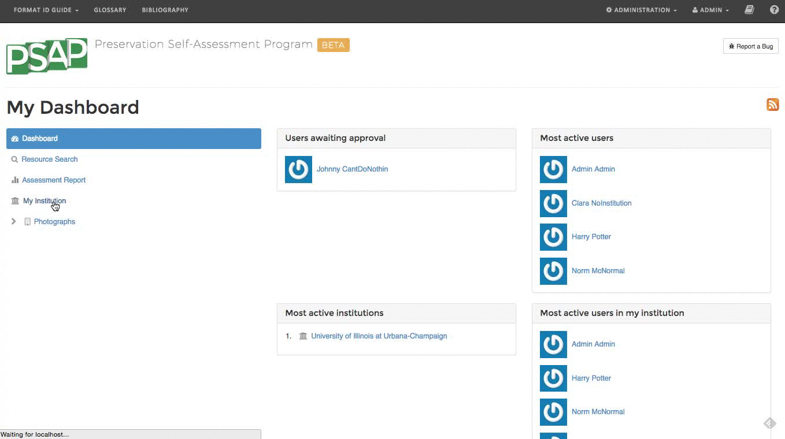
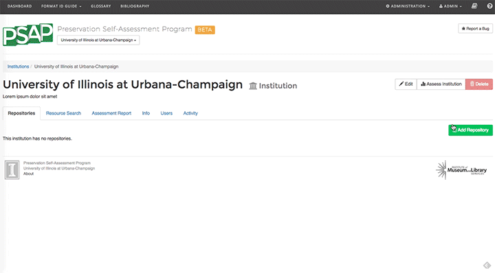
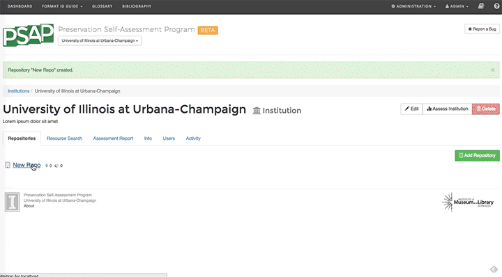
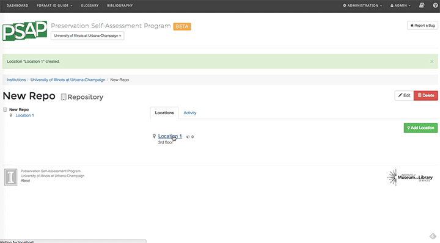
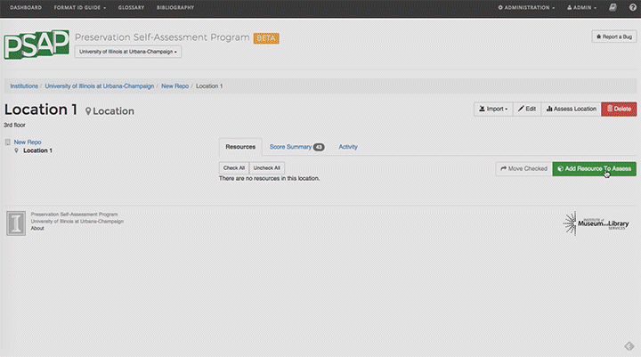
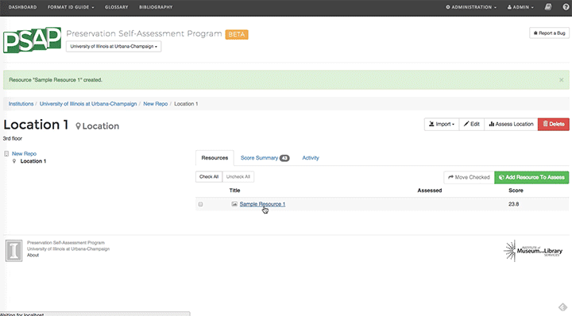
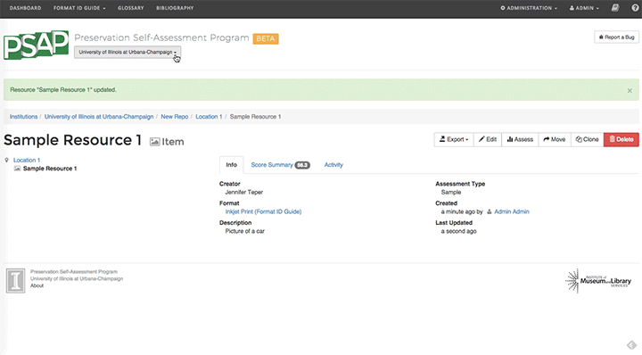

Getting Started
Want to jump right in? Use this guide.
If you find that you need more comprehensive support, visit our user manual.
Here are the basic steps to get you going:
1. Assess your institution
Begin at the Dashboard
Select your institution
Select Assess Institution.
Complete the form.

This is a critical step to ensure your final score is accurate.
2. Create a new repository
Select Add Repository.
Give your repository a name.

Repositories are containers for locations.
3. Add a location to your repository
Select your repository.
Select Add Location.
Give your location a name.

Click 'Add Location' to create a new location for your resources.
4. Assess the location you just created
Select your location.
Select Assess Location.
Complete the form.

This way, as you add resources, the scores you see will be accurate.
(Plus, you won't have to do it later).
5. Add your first resource
Select your location.
Select Add Resource to Assess.
Complete the form.
Optional information is ... optional.

Add your resource, assess, repeat.
(Pro tip: Use the clone button to duplicate similar resources.)
6. Assess the resource you just created
Select your resource.
Select Assess.
Complete the form.

It's easier if you assess resources as you go. Trust us.
7. Generate an institutional report
Navigate to your institution.
Select the PSAP drop-down menu.
Select Assessment Report.

Generate reports to see your preservation assessment summarized!
Looking for an answer that you didn't find? Visit our help landing page